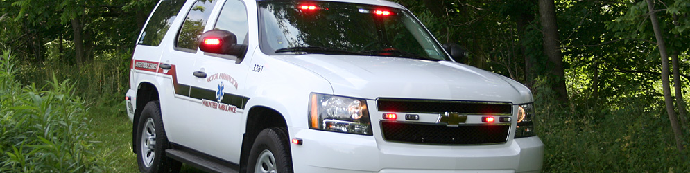

Services: First Responder Services
In 2001, a First Responder program was implemented in order to provide quicker response to our expanding community. This program utilizes qualified personnel as first responders to emergency situations when travel time for the ambulance crew is lengthy and dispatch information indicates that because of the nature of the emergency, time is critical. With this program, 5 sets of BLS equipment, including defibrillation, have been implemented in locations where typical travel time of our ambulance personnel exceeds five minutes. The cost of this program exceeded $20,000 and was partially offset by grants received from the office of NYS Senator Michael Nozzolio.
